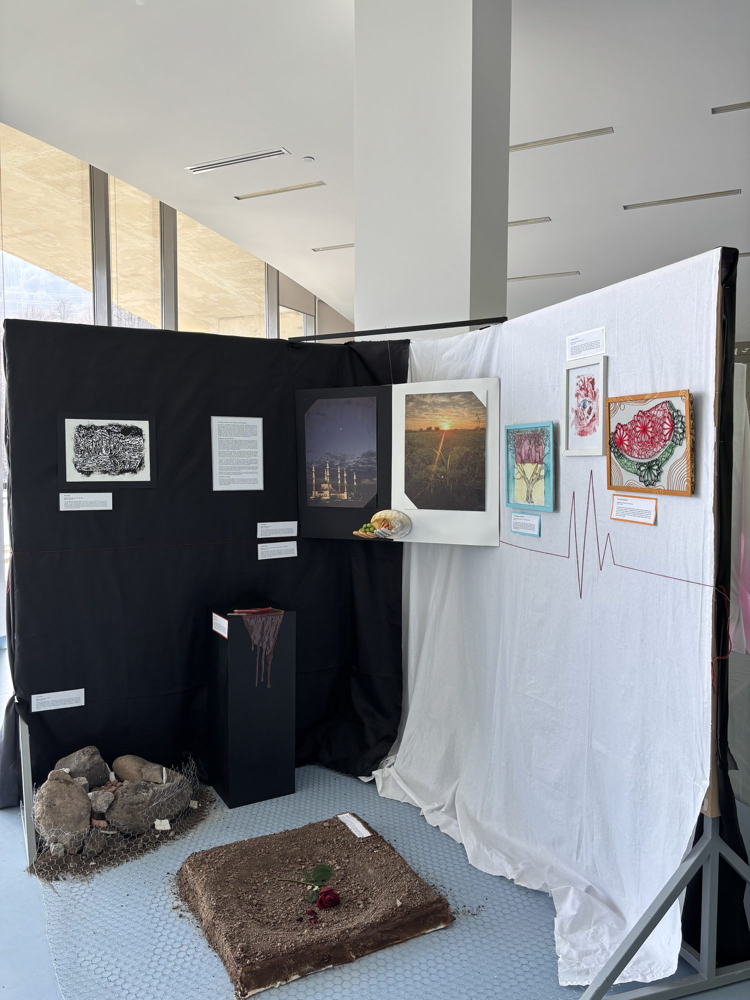

Ayham Khleif · IB Visual Arts Exhibition
The Power of Choice
Growth, Resistance, and Destruction
Works
Nine pieces, in the order you meet them in the exhibition. Select one to read its story.
The exhibition
Two diagonal walls, one black and one white, meet behind Dichotomy. Destruction is arranged to the left, growth to the right, and a fence on the floor makes stepping in an effort. Walk through it yourself.

Curatorial rationale
The Power of Choice: Growth, Resistance, and Destruction
My exhibition is an exploration of the tension between destruction and regeneration, resistance and resilience. I was born and raised in Palestine. Although this tiny part of the world has been destined to suffer throughout history, I saw my people surviving and finding strength amidst destruction. They always lose what they once loved but hope never leaves their sides. My work is deeply personal and a reflection of lived experiences and historical and social narratives. My work was inspired by many Palestinian artists such as Khaled Hourani, whose “Watermelon Flag” reclaims identity through color and symbolism. As well as other artists whose stark works reveal the human cost of conflict, such as the photographer Sebastião Salgado. My choice of media and material is essential to conveying the artist’s struggle — bringing heavy rocks from a nearby river, scratching plexiglass with a nail, and hammering countless nails into place. I believe in the necessity that my creation is from what is available, as an admiration of the resilience shown by those who continue to create despite adversity.
Walking through the exhibition
My exhibition is structured to be welcoming and challenging. When looking at the exhibition from a distance the entire exhibition is visible, symbolizing our ability to see what is happening around us, yet often choose to remain detached. The diagonal walls create an inviting atmosphere. However, when the viewer steps in, movement gets more difficult. Navigation is disrupted by the fence on the floor, reflecting the efforts required to engage with the themes explored. Moreover, A Love Story acts like another obstacle/burden on the way, forcing the viewers to focus on its bothersome existence and ignore its story, symbolizing the dehumanized reality of this scene. The curatorial text placement far inside the exhibition further highlights the idea that truth is not within reach and viewers must make the active choice to engage with the narrative presented.
Upon entering the exhibition, the audience is met with “Dichotomy”, which introduces the first conflict humans encounter on this earth, dividing the exhibition into two halves. The white and black background reinforce this division. From the center, the works are arranged towards growth on the right side and towards destruction on the left side. Then the viewer is confronted with a choice — a simple binary that grows more complex as they navigate other pieces. “Choose Wisely” presents the duality of peace and war, illustrating that both paths are not distinct, but do intersect.
The first set of works highlights destruction and loss. Look Away, which can’t be easily noticed, illustrates the immediate aftermath of war, forcing the viewer into an uncomfortable feeling of devastation. The other three pieces in this set represent different types of loss. A Love Story symbolizes a broken future without love; Belonging shows a child whose life merged into destruction and his innocence was stolen; A Delicious Dream gives attention to the lost dreams and ambitions. They all come together to show that death is not the only way to end someone’s life.
Navigating to the right side, the works take on the themes of resilience and rebirth. This set of works explores the ways in which strength is obtained. Endless Struggles, Endless Strength explores the past generations’ sacrifices that sustain future ones. The Fruit of Resistance is a result of resisting injustice. It symbolizes the strength gained from patience and faith.
Elements of youth and growth are present on both sides. They are a reminder that renewal is always a possibility even in destruction. The exhibition is structured on a spectrum of order and chaos, with The Fruit of Resistance and Look Away at each end.
What I hope to achieve
My exhibition is an invitation to reflect on the dichotomy of our world. A world that presents us with binaries that are never truly separated. After navigating my exhibition, the viewer should conclude that destruction and growth, resistance and survival, are not mutually exclusive. Through my work, I hope to evoke empathy, challenge perceptions, and ultimately leave the audience with a meaningful interpretation of the complexities of resilience.
About
I’m Ayham Khleif, an artist born and raised in Palestine. I make work from what is available: river rocks, nails and thread, scratched plexiglass, soil. The Power of Choice was my IB Visual Arts exhibition.